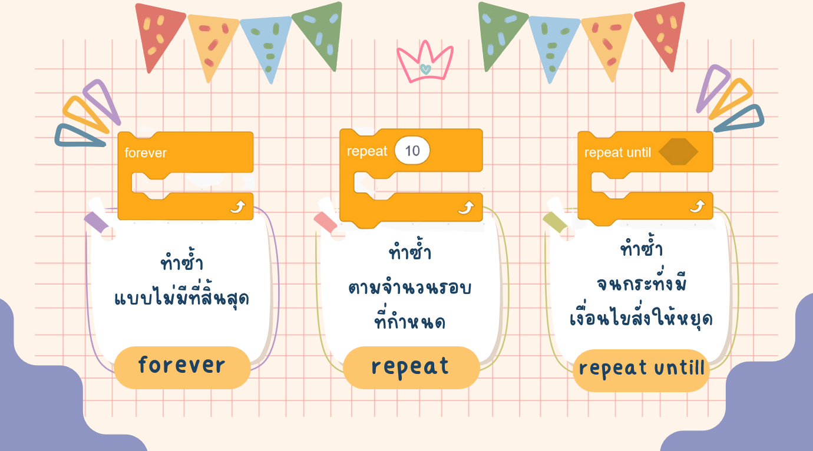
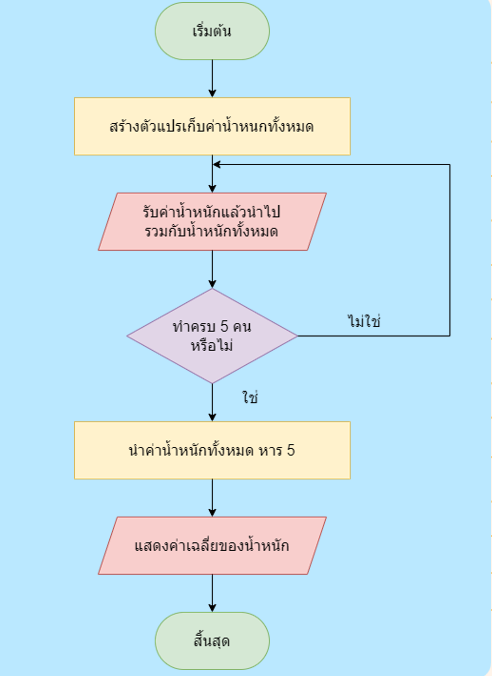

การเขียนโปรแกรมแบบวนซ้ำ
scratch.
การทำงานแบบวนซ้ำ คืออะไร ??
การเขียนโปรแกรมแบบวนซ้ำ เป็นการเขียนคำสั่งให้โปรแกรมทำงานอย่างใดอย่างหนึ่งซ้ำกัน จนครบตามจำนวนรอบที่กำหนด หรือหยุดทำซ้ำเมื่อมีคำสั่งตามเงื่อนไข ที่กำหนดไว้
คำสั่งวนซ้ำในโปรแกรม scratch

การเขียนโปรแกรม หาค่าเฉลี่ย
- การเขียนโปรแกรม
หาค่าเฉลี่ย
ค่าเฉลี่ย คือ ค่าเฉลี่ยเลขคณิต และคำนวณได้โดยการบวกตัวเลขในกลุ่มหนึ่งเข้าด้วยกัน จากนั้นหารด้วยจำนวนนับของตัวเลขในกลุ่มนั้น ตัวอย่างเช่น ค่าเฉลี่ยของ 2, 3, 3, 5, 7 และ 10 คือ 30 หารด้วย 6 ซึ่งเท่ากับ 5
- การเขียนโปรแกรม
หาค่าเฉลี่ย
ให้นักเรียนเขียนโปรแกรมกำหนดตัวแปรรับข้อมูลน้ำหนักของเพื่อน จำนวน 5 คน แล้วหาค่าเฉลี่ยของน้ำหนัก
การเขียนผังงาน
